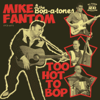

Mike Fantom and the Bop-A-Tones - Too Hot To Bop (Album, 2016)
01 - Guitar Breaker (1:48)
02 - Vampire Baby (2:45)
03 - Rockin' Ball (1:31)
04 - Fire Of Love (2:32)
05 - Down In The Ol' Bayou (1:53)
06 - Too Hot To Bop (2:22)
07 - Pretty Eyed Baby (2:01)
08 - Fantomas Rock (2:14)
09 - Johnny Was A Bad Boy (2:34)
10 - I Bopped The Blues With Mary-Lou (2:23)
11 - The Bop A-Tones And Me (1:44)
12 - Why Are You Gone (2:13)
13 - I've Gotta Find Someone (1:57)
© El Toro Records :: [ETCD-6075]
Notes
Review
361/366 (Project 366)
Very resonant and rockin' Rockabilly bop. A pretty authentic raw Rock'n'Roll, but sometimes very strolling tunes. Also very very cool instrumental included ("Fantomas Rock").
If you want a sense of style and rocking power, and also just shake up a little, these are great songs. On top of that, there is a charismatic vocalist as well as a crazy lead guitar.